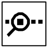
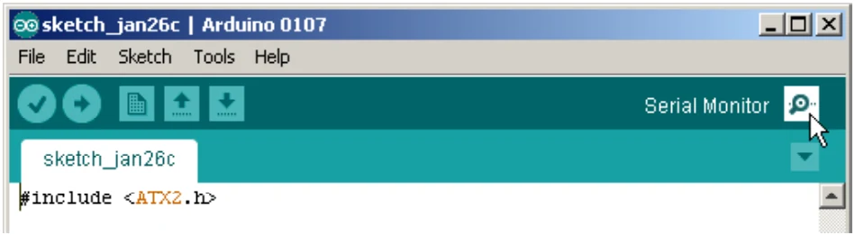
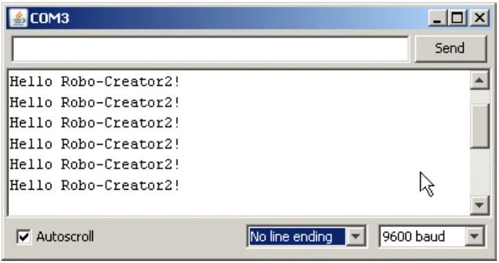

4.2.7.2 uart
This is serial data sending function via UART0 port. The default baudrate of this function is 9,600 bit per second.
Syntax
void uart(char *p,...)Parameter
*p - Type of data. Support the special character for setting display method.
CommandOperation
%c or %CDisplay 1 character
%d or %DDisplay the decimal value -32,768 to +32,767
%l or %LDisplay the decimal value -2,147,483,648 to +2,147,483,647 %f or %FDisplay floating point 3 digits
\rSet the message left justify of the line
\nDisplay message on the new line
Example 4-16
#include <ATX2.h> // Include main library
void setup()
{}
void loop()
{
uart("Hello Robo-Creator2!\r\n");
// Transmit data to computer with carriage returm
sleep(2000); // Delay 2 seconds
}For running this sketch, still connect the USB cable after uploading. Open the
Serial Monitor by clicking on

button or choose at menu Tools > Serial Monitor
Wait a moment, The Serial Monitor is appeared and shows the messages following the picture below. Click to mark at Auto Scroll box and select No line ending. Last box is selected to 9600 Baud.

Original manual, pages 68–69